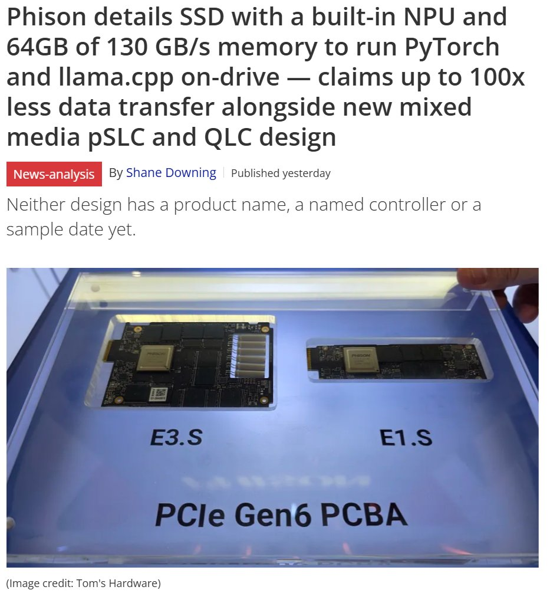

新闻 · 2026-11-22 12:00
群联展示内置 NPU 与 64GB 内存的智能固态硬盘，可直接运行 AI 模型
群联在SC26大会上展示一款内置NPU与64GB内存的企业级固态硬盘，可直接运行PyTorch、vLLM、OpenVINO和llama.cpp等AI框架，通过将计算任务移至SSD，减少数据传输量10至100倍，降低主机CPU负载。

来源与核验
单一信源报道，未交叉核实
群联在SC26大会上展示一款内置NPU与64GB内存的企业级固态硬盘，可直接运行PyTorch、vLLM、OpenVINO和llama.cpp等AI框架，通过将计算任务移至SSD，减少数据传输量10至100倍，降低主机CPU负载。

单一信源报道，未交叉核实